Avem N pietre, numerotate de la 1-N. Pentru fiecare piatră i (1 ≤ i ≤ N), inălțimea pietrei i este hi. O broască se află inițial pe piatra 1. Va repeta următoarele actiuni de un număr de ori până când ajunge pe piatra N: Daca broasca se află pe piatra i, poate să sară pe una dintre pietrele următoare: piatra i+1, i+2, ..., i+k. Costul unei sarituri este dat de înălțimea pietrei de pe care sare minus înălțimea pietrei pe care aterizeaza |hi - hj|. Găsiți costul total minim astfel încât broasca să ajungă pe piatra N.
Funcția noastră backtracking are doi parametri: poziția pe care se află broasca și costul acumulat până în acel punct. În cazul în care nu am ajuns la sfârșit, vom parcurge pietrele în care putem ajunge și vom apela funcția backtracking pentru fiecare dintre ele. De obicei pietrele în care vom putea ajunge vor fi următoarele k, dar în cazul în care sunt mai puțin de k pietre până la sfârșit, atunci le vom parcurge pe acestea. Când ajungem pe ultima piatră vom compara costul drumului cu soluția de până acum, iar în cazul în care e mai bun atunci o vom înlocui.

#include <iostream>
#include <algorithm>
using namespace std;
const int NMAX = 1e5;
const int INF = 1e9;
int n, k;
int h[NMAX + 1];
int solutie = INF;
void citire(){
cin >> n >> k;
for (int i = 1; i <= n; ++i){
cin >> h[i];
}
}
int cost_saritura(int i, int j){
return abs(h[i] - h[j]);
}
void backtracking(int i, int cost_pana_acum){
if (i == n){
if (cost_pana_acum < solutie)
solutie = cost_pana_acum;
return;
}
for (int j = i + 1; j <= min(i + k, n); ++j){
backtracking(j, cost_pana_acum + cost_saritura(i, j));
}
}
void afisare(){
cout << solutie;
}
int main()
{
citire();
backtracking(1, 0);
afisare();
return 0;
}